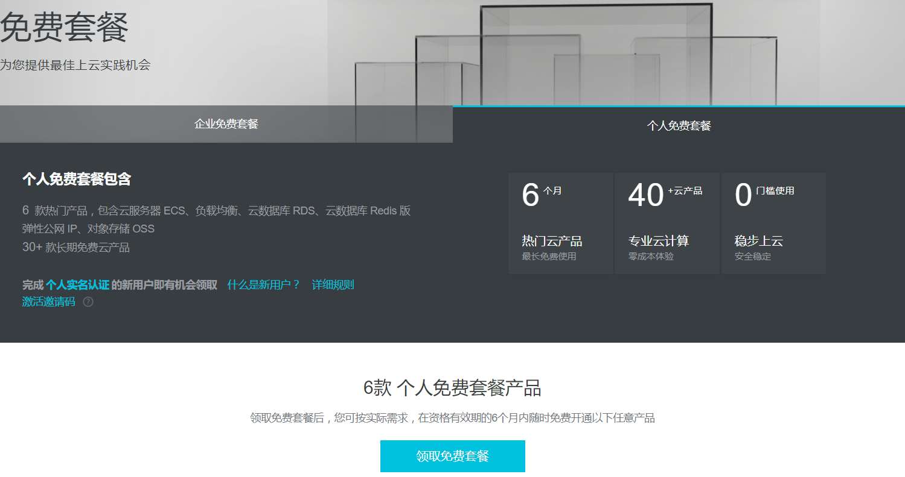

9元购买阿里云免费套餐云服务器ECS的半年使用权限

网址：https://free.aliyun.com/
需要用到的工具
Bitvise+Proxifier
链接:
https://pan.baidu.com/s/1b5OETK 密码: ayfi
一、创建实例
 9元半年的，地域好像只有华东
9元半年的，地域好像只有华东
操作系统选择Linux的都行，我个人选的Ubuntu 64位
创建完会接收一个“[自定义命名].pem”的公钥文件，切记保存好
二、配置安全组
阿里云管理控制台：https://home.console.aliyun.com/，涂黑部分为IP,公有IP之后在登录时需要用到
进入ECS管理界面，配置本实例安全组，配置规则->添加安全规则，如图设置
三、Bitvise设置
Login设置：
Host：填写服务器的公有IP
导入公钥文件,Clinet key manager->Import
登录后觉得弹出界面烦可以关掉：
Service设置：
四、Proxifier设置
配置代理服务器
Bitvise登录服务器后,检查,呈现原谅色则大功告成
编辑代理规则
这样只对游戏进行代理，不会因为流量问题产生费用(大概，我不清楚阿里云的收费模式)